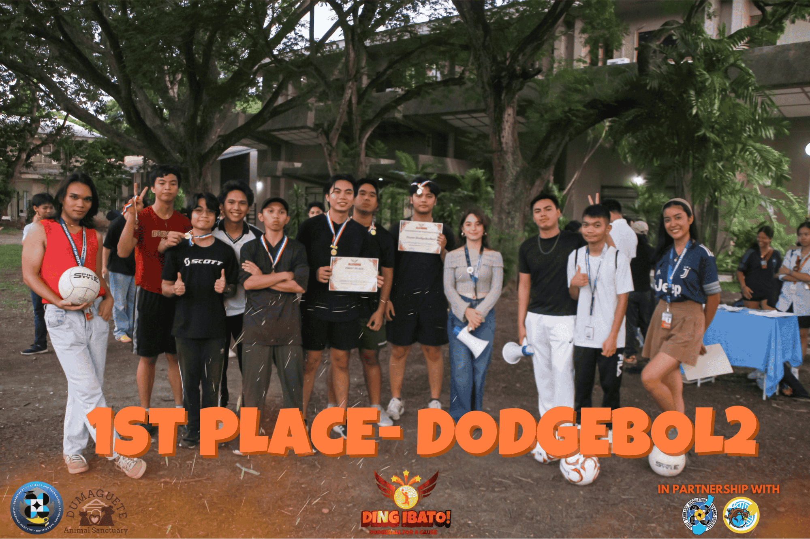
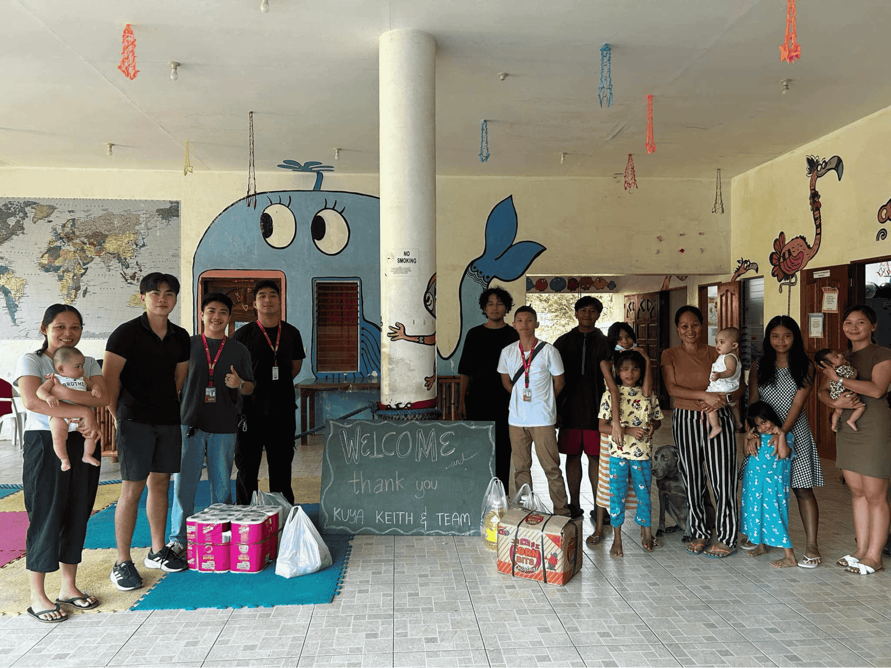
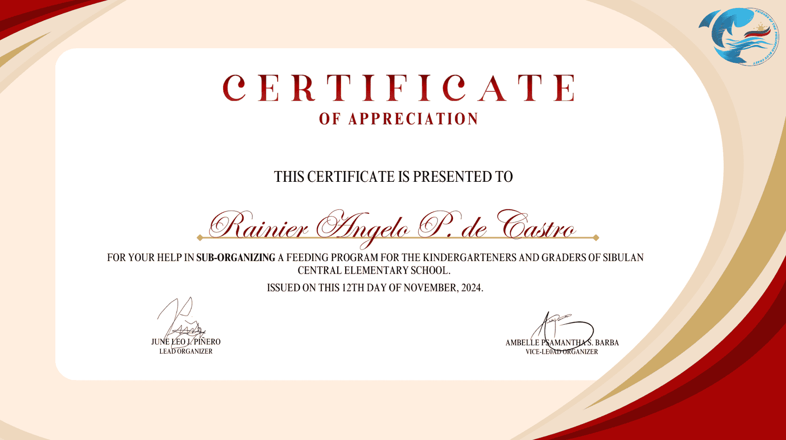
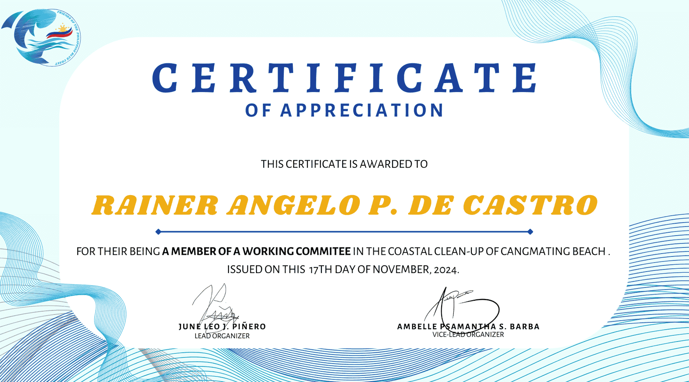

What?
On November 13, 2024, I participated in Ding Ibato: A Smash Hit, a dodgeball tournament organized by DOST SA SU at Silliman University. The event was not only about showcasing athleticism and teamwork but also aimed to support a meaningful cause—the Dumaguete Animal Sanctuary. Competing as part of a team, we played our hearts out, ultimately securing first place in the tournament.
So What?
Winning the event was an incredible achievement, but the most fulfilling aspect was knowing that our participation contributed to a charitable cause. The tournament reminded me of the power of sports in fostering camaraderie and bringing people together for a greater purpose. The competitive yet friendly atmosphere and the shared goal of supporting the sanctuary made the victory even more special. It was a reminder that success feels more meaningful when it also makes a positive impact on the community.
Now What?
This experience has encouraged me to seek more opportunities to participate in events that combine physical activity with social responsibility. I plan to stay involved in similar activities and support causes that align with my values. Additionally, this tournament highlighted the importance of teamwork and collaboration, which I aim to apply not only in sports but also in other aspects of my life.
Because of this activity, I am...
motivated to continue participating in community-centered initiatives that promote unity, charity, and personal growth.

What?
On November 17, 2024, I had the privilege of joining the FPBC Beach Cleanup Drive as part of the working committee. The activity aimed to restore the beauty of the coastal area while promoting environmental awareness and responsibility. Together with other volunteers, we spent the morning collecting trash, sorting recyclable materials, and ensuring that the beach was left in a much cleaner and healthier state.
So What?
Participating in the cleanup drive was a meaningful experience that deepened my sense of responsibility toward the environment. Witnessing the amount of waste along the shore was eye-opening and served as a reminder of the impact human activities have on nature. Being part of the working committee allowed me to contribute not only through hands-on work but also by helping organize the event, ensuring its smooth execution. The camaraderie among the volunteers made the activity both productive and enjoyable. It felt rewarding to know that our collective efforts made a tangible difference in preserving the natural beauty of the beach.
Now What?
This experience has inspired me to be more mindful of my environmental impact and to advocate for sustainable practices in my daily life. It also encouraged me to participate in or organize similar initiatives in the future, as I realized the importance of community efforts in addressing environmental challenges. Moving forward, I aim to spread awareness about the significance of environmental conservation and involve more people in activities that promote sustainability.
Because of this activity, I am...
more aware of the urgent need to protect our environment and motivated to take part in actions that contribute to a cleaner and greener future.
What?
On November 12, 2024, FPBC organized a Feeding Program at Sibulan Central Elementary School for kindergarten students. Although I wasn’t able to join the event due to morning classes, I was still actively involved as a sub-organizer. My role included helping with the pre-event planning, coordinating tasks with the main team, and ensuring that the preparations were in place for the event's success. Knowing that the children enjoyed their meals and engaged with the volunteers made me proud to have contributed, even behind the scenes.
So What?
This experience reinforced how meaningful community service can be, even when you can’t be physically present. It showed me the importance of teamwork and preparation in making any event impactful. Hearing about the children's joy and the positive atmosphere during the program reassured me that our efforts as a team made a difference. It also reminded me that sometimes, contributing in the background can be just as significant as being on the front lines.
Now What?
This event encouraged me to seek better ways to balance academic responsibilities with opportunities for service, ensuring I can participate more fully in future initiatives. Moving forward, I plan to be more proactive in managing my time so I can engage in similar activities while still keeping up with my studies. The experience also deepened my motivation to support outreach programs, especially those that focus on children and their well-being.
Because of this activity, I am...
more inspired to contribute to community efforts in whatever way I can, whether through direct participation or background support, and to make a positive impact on others' lives.
What?
On December 4, 2024, I had the opportunity to take part in the Donation Drive for Bata ng Calabnugan, an orphanage located in Sibulan, Dumaguete. As a sub-organizer, I assisted in coordinating the collection and distribution of donations. This event was extra special for me as it marked my first visit to an orphanage. During the visit, I learned about the inspiring story behind the orphanage—a compassionate Italian man founded it with the vision of helping vulnerable children in the community.
So What?
The experience deeply moved me. Hearing the story behind the orphanage and witnessing the children’s joy firsthand filled me with a profound sense of warmth and inspiration. It was heartening to see how one person's selflessness and determination could create such a lasting impact on the lives of many. This visit also opened my eyes to the importance of community support and how small acts of kindness can make a big difference.
Now What?
This experience has motivated me to continue participating in outreach programs and to seek more opportunities to support orphanages and similar initiatives. Moving forward, I plan to encourage others to join such causes, emphasizing how meaningful and rewarding they can be. If given another chance to visit Bata ng Calabnugan, I would love to spend more time with the children, sharing stories and activities to brighten their day further.
Because of this activity, I am...
more inspired to give back to the community and to recognize the importance of extending help to those in need, especially children who deserve love, care, and opportunities for a better future.